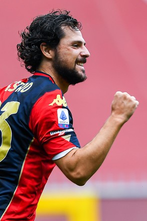
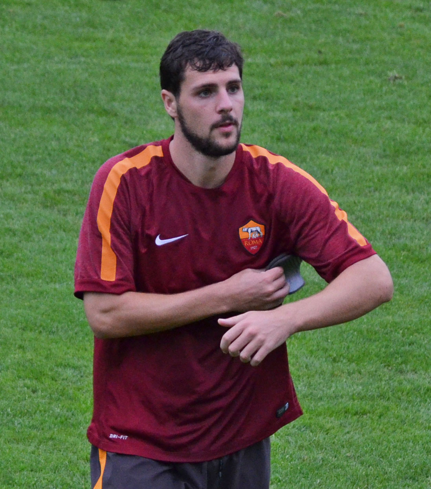
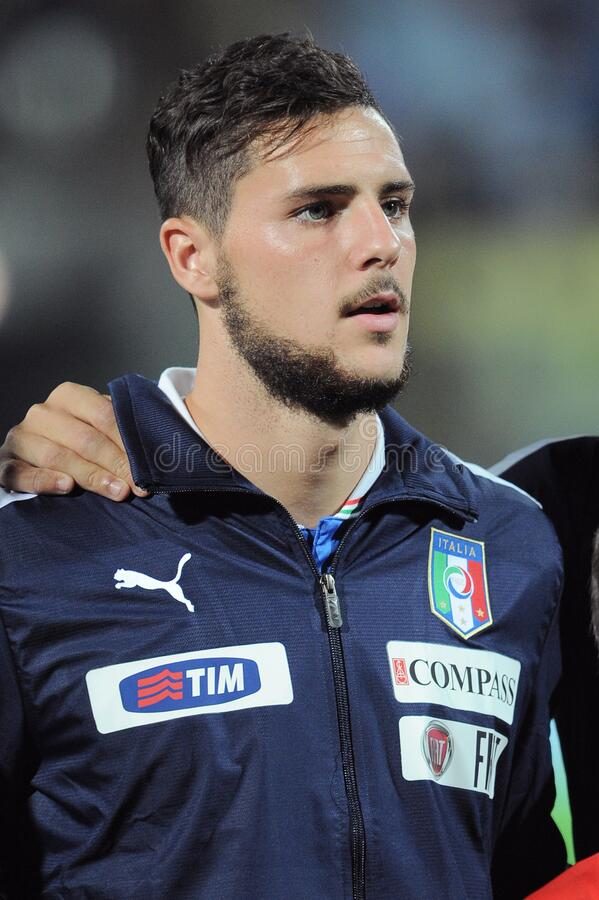
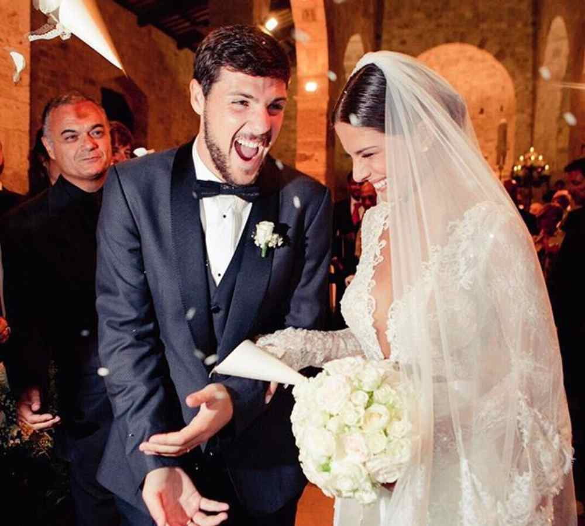

¿Quién es Mattia Destro?
Supongo que has entrado a la página sin saber en lo más mínimo sobre quién es esta persona.
Pero no te preocupes, a fin de cuentas, cuando acabes de leer esta página, sabrás algunas
cosas que después te olvidarás sobre Mattia Destro. Así que, a
continuación, te hablaré un poco sobre él.

FOTO: Mattia Destro jugando en su actual equipo Genoa CFC desde 2019.
Nacimiento
Mattia Destro nació en la ciudad de Ascoli Piceno, a 138 km de la capital italiana, Roma,
el 20 de marzo de 1991. Es hijo del exfutbolista Flavio Destro y Monica Destro.
Trayectoria
Para heredar la carrera de su padre, empezó a jugar al fútbol a muy temprana edad.
Comenzó su carrera en 2005 jugando en el equipo juvenil del Inter de Milán,
y cinco años después pasó al Genoa C.F.C,
equipo el cual debutó oficialmente en la Serie A de Italia
el 12 de septiembre de 2010. En la siguente temporada fue cedido en préstamo al
Siena donde logró una actuación destacable,
marcando 13 goles en 31 partidos. En junio de 2012 fue transferido al A. S. Roma, donde
obtuvo el galardón al ser el goleador de la Coppa Italia
de la temporada 2012-13
.

FOTO: Mattia Destro jugando para A. S. Roma
En enero de 2015 fue cedido al A. C. Milan, donde marcó un
gol con la camiseta milanista el 15 de febrero en el empate 1-1 ante el
Empoli. Volvería del préstamo a la A. S. Roma, pero en agosto de 2015 fue transferido al
club Bologna F. C. donde jugó en 5 temporadas, un total de 105 partidos y marcó 29 goles.
Selección de Italia
Había jugado con la Selección de Fútbol de Italia en 8 ocasiones y ha marcado 1 gol. Debutó el 15 de agosto de 2012, en un encuentro amistoso ante la
Selección de Fútbol de Inglaterra que finalizó con el marcador 2-1 a favor de los ingleses. Su único gol que marcó con su selección lo marcó
en septiembre de 2012 en la victoria por 2-0 ante Malta.

FOTO: Mattia Destro durante el Himno Nacional
Vida Personal
Mattia Destro está casado con la modelo italiana Ludovica Caramis
en septiembre de 2014, después de dos años de noviazgo. En 2020, nació su primer hijo llamado Leone.
